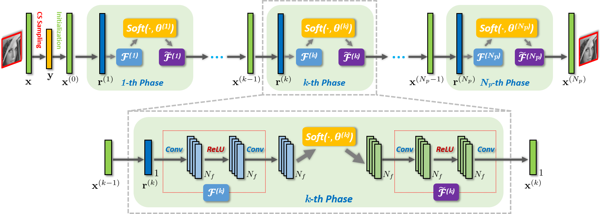

Abstract—With the aim of developing a fast yet accurate algorithm for compressive sensing (CS) reconstruction of natural images, we combine in this paper the merits of two existing categories of CS methods: the structure insights of traditional optimization-based methods and the speed of recent network-based ones. Specifically, we propose a novel structured deep network, dubbed ISTA-Net, which is inspired by the Iterative Shrinkage-Thresholding Algorithm (ISTA) for optimizing a general L1 norm CS reconstruction model. To cast ISTA into deep network form, we develop an effective strategy to solve the proximal mapping associated with the sparsity-inducing regularizer using nonlinear transforms. All the parameters in ISTA-Net (e.g. nonlinear transforms, shrinkage thresholds, step sizes, etc.) are learned end-to-end, rather than being hand-crafted. Moreover, considering that the residuals of natural images are more compressible, an enhanced version of ISTA-Net in the residual domain, dubbed ISTA-Net+ is derived to further improve CS reconstruction. Extensive CS experiments demonstrate that the proposed ISTA-Nets outperform existing state-of-the-art optimization-based and network-based CS methods by large margins, while maintaining fast computational speed.

Paper:
ISTA-Net: Interpretable Optimization-Inspired Deep Network for Image Compressive Sensing
J. Zhang, B. Ghanem
CVPR 2018
[PDF] [Tensorflow Code] [PyTorch Code]